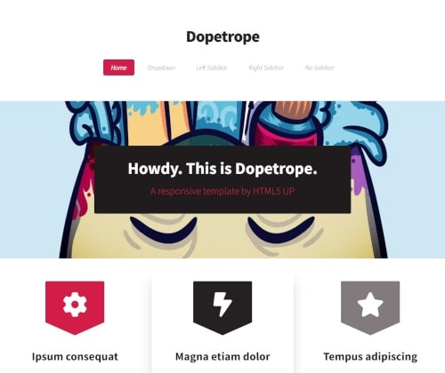
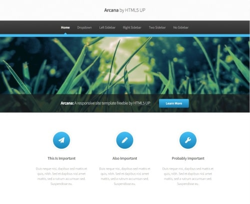
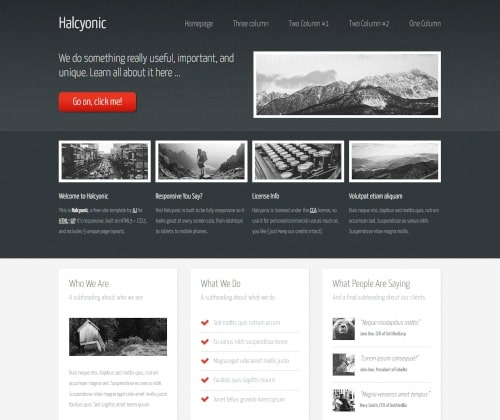

My Projects
-
Dopetrope Website
Můj první projekt. Toto je verze 3.0. Ve verzi 3.0 jsem se snažil vyvarovat duplikaci kódu. Snažil jsem se používat Sass proměnné k usnadnění práce. Objevil jsem spoustu zajímavých metod CSS. Pracovat s flexboxem a nechat stránku co nejvíc responzivní a zasáhnout teprve ve chvílích kdy se stránka začíná rozpadat. Zde jsem také použil Sass list cyklus. Výzva byla udělat mobilní menu i když ještě neovladám javascript. Udělal jsem to přes
input type="checkbox". Nyní už vím jak to udělat i v javascriptu respektive v "Jquery". Použité technologie - HTML, CSS, SCSS. -
Arcana Website
Můj druhý projekt. Zde jsem se zaměřil na používaní Sass "placeholderů" na eliminaci duplicitního kódu. Zde se mi už pracovalo mnohem svižněji po znalostech z prvního projektu. Na pozadí je aplikovaná jemná zrnitá textura, která se mi moc líbí a rozhodně tento detail budu používat i v následujících projektech.Na této websitě jsou zajímavostí barevné gradienty a pseudoelementy v navigaci. Stránka je také plně responzivní. Prozatím není funkční kontaktní formulář. Použité technologie - HTML, CSS, SCSS.
-
Halcyonic Website
V pořadí třetí projekt. Zde byl úkol udržet stránku responzivní.Zde jsem si vyhrál s flexboxem a zároveň jsem si před editací kódu připravil "mixiny" pro všechny důležité prvky. Zejména nastavení fontu pro různé heading formáty a zjednodušil přepínání velikosti fontu při určitém breakpointu. Zde jsem pracoval jak s proměnnými v Sassu tak jsem využíval proměnné přímo v ":root" CSS. Začal jsem využívat funkci "use" v Sassu díky které můžu využívat proměnné i mixiny v celém projektu. Rozdělil jsem header a footer od hlavního main a následně jsem ho spojil, takže ve výsledku stačí napsat jen 1x header a 1x footer a jednoduše ho připojit k dalším podstránkám projektu. Po tomto projektu jsem upravil i svoje první dva projekty aby odpovídaly tomuto přístupu. Použité technologie - HTML, CSS, SCSS.